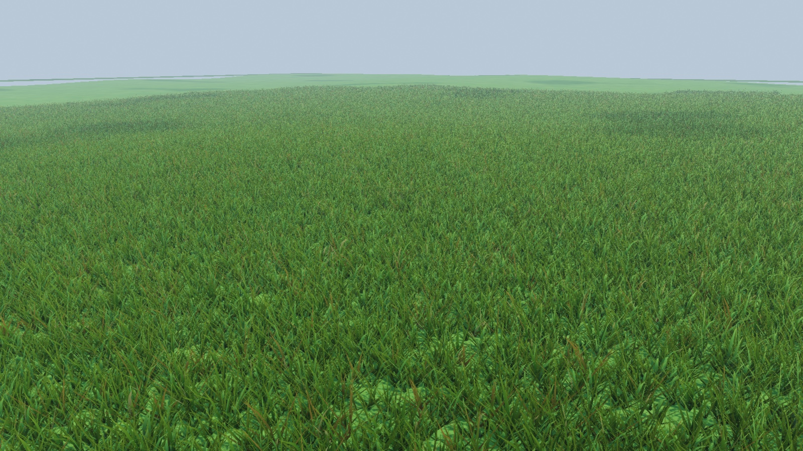
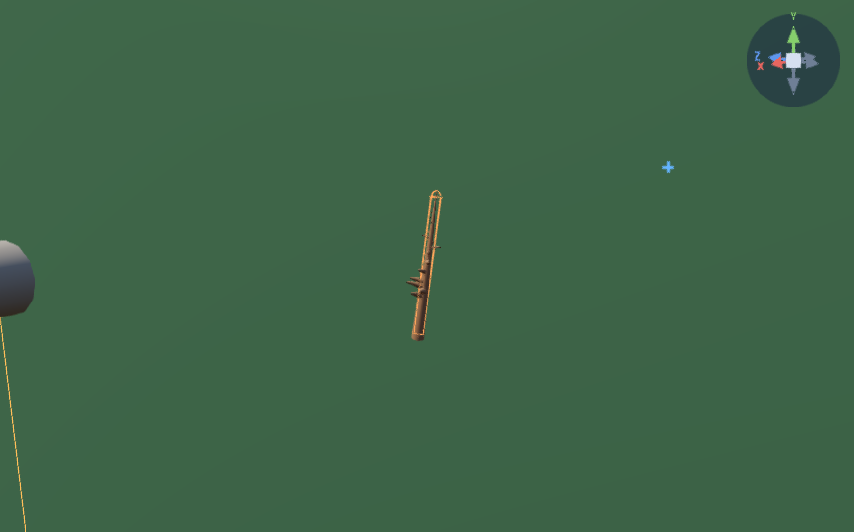

Core
Рельеф, климат и биомы из сида: высота и климат в любой точке мира в целых сантиметрах.
Системы движка / TerraWeave
Процедурный ландшафт и природа
Рельеф, растительность и камни из правил и сида: генератор округлых камней, валунов, плит и обломков с тремя LOD и размещением по высоте, крутизне и маскам.
в разработке с 18.11.2026

Рельеф, климат и биомы из сида: высота и климат в любой точке мира в целых сантиметрах.
Процедурные деревья с независимыми LOD ветвей, импостер-атласы на 8 ракурсов и билборды.
Видимость и инстансинг растительности патчами — без сущности на каждую травинку.
Ландшафт и лес километрового масштаба: HLOD, GPU-резидентность регионов, сварка ближнего и дальнего рельефа без швов.
Ветер по сетке, здоровье листвы, эрозия, корни, рост и восстановление леса, вырубки.
Детерминированная генерация мира из сида.
Швы без трещин на склонах, общие нормали.
Общий контракт с NEREID.
Изменённые тайлы рельефа сразу передаются в динамический непрямой свет LUMA; совместная работа с NEREID и PHYSIS: импостеры, горизонт, зоны эрозии.
В Studio на Mac через MCP переключали камеру между Землёй и Луной. Во время игры снимок показывал растения на обоих телах; смена камеры сохраняла ревизию карты.
Густой луг с солнечными тенями, просвечиванием листьев и детализацией по расстоянию.
Через MCP можно настроить лес, посадить, переместить и удалить растение. Проверены отклонение устаревшей ревизии, отмена, повтор и открытие сохранённой карты.
Коллизия стоящего дерева меняется с ростом. При падении статическая форма уступает место физическому стволу; исчерпанное дерево убирается и при отложенном падении.
Размеры коллизии ствола рассчитываются по профилю ARBOR, возрасту дерева и оставшейся массе древесины.
В нативной симуляции физические объекты привязаны к планете. Box3D выполняет один шаг на тик и восстанавливает положение объектов из контрольной точки.
Когда древесина исчерпана, физическое тело ствола удаляется. Повторное обновление и откат проверены в Box3D.
При достижении настроенного порога остатка древесины дерево падает. Повторная обработка события сохраняет единственный физический ствол.
Положение ствола интерполируется между двумя подтверждёнными состояниями с учётом отката и видимости.
Породы леса задаются в карте по идентификатору, с профилем ARBOR и собственными текстурами.
Стоящие и упавшие деревья показываются по текущей видимости ячейки. Декоративные деревья учитывают ту же границу видимости.
Толщина упавшего ствола зависит от остатка древесины. Видимая модель следует за физическим телом именно этого падения.
Проверка на GPU, интеграций и производительности ещё не закончена.
Проверка подземной геометрии, навигации, входов, восстановления и предпросмотра в Studio на объединённой ветке.
Stage 161D5b: приоритет видимой области, ближайшие растения и реальные позиции упавших стволов, общий лимит.
Stage 161D5a: независимый выбор тела, предварительная геометрия перемещения и одна транзакция на отпускании мыши.
Stage 161D4c3: ограниченный снимок высот Surface, отдельный GPU-меш, приоритет активного тела.
Stage 161D4c2: отслеживание PBR-файлов, видовые материалы брёвен, PHYSIS штормы в касательной системе, частичная сезонная прозрачность.
Stage 161D4c1: явные климатические привязки, локальный ветер в касательной системе, GPU-риг ARBOR, сезонный оттенок и сброс листвы.
Рост и отмирание из ECS, обнажённые корни и ветви упавших деревьев ARBOR в положении физического ствола.
Stage 161D4a: общие прототипы ARBOR с тремя LOD, PBR-пакетами и сферическим размещением; ограниченный кеш GPU.
Stage 161D3: выбор стабильного species/key, подсветка, перемещение одним кликом через MapDoc, отмена и Undo.
Stage 161D2b: положения корней и физических капсул из авторитетного снимка, переключатель Live, общие лимиты.
Stage 161D2a: линии реального прототипа ARBOR, корневая опора и контур проектной капсулы на активном теле; отдельный лимит геометрии.
Stage 161D1: редактируемые body/face/x/y, переключение marker/direct, выбор папки content через Assets; сохранение и Undo через существующий валидатор. Геометрические оверлеи отдельно.
Stage 161C: канонические body/face/x/y без служебных ECS-объектов, one-shot Scene pick, Undo.
Stage 161A: редактирование карты, общий валидатор профилей и экологии, выбор существующих маркеров, диагностика живого ECS.

25.11.2026Луговая трава при дневном и низком солнцеУ основания высоких травинок растут короткие листья. Они заполняют просветы между пучками и отбрасывают тени на землю.
25.11.2026Ветви упавшего дерева в StudioПосле естественного падения дерева Studio показывает его ствол и ветви в положении, рассчитанном физикой. 22.11.2026TerraWeave: текстура камней без воронки на макушкеСгенерированные камни TerraWeave получали развёртку как глобус, и на макушке текстура скручивалась в воронку. Теперь каждая грань берёт проекцию по своей главной оси, и камень покрыт текстурой с одинаковой плотностью со всех сторон.
22.11.2026TerraWeave: текстура камней без воронки на макушкеСгенерированные камни TerraWeave получали развёртку как глобус, и на макушке текстура скручивалась в воронку. Теперь каждая грань берёт проекцию по своей главной оси, и камень покрыт текстурой с одинаковой плотностью со всех сторон. 21.11.2026Земля TERRA без тайлинга и кляксВблизи земля берёт траву, песок и скалу из общих детальных слоёв в мировых координатах, а не из запечённой текстуры тайла; повтор ломают второй повёрнутый сэмпл и макрошум.
21.11.2026Земля TERRA без тайлинга и кляксВблизи земля берёт траву, песок и скалу из общих детальных слоёв в мировых координатах, а не из запечённой текстуры тайла; повтор ломают второй повёрнутый сэмпл и макрошум. 21.11.2026Лес TerraWeave: дерево целиком в один вызов, импостеры вдалиОдинаковые деревья теперь рисуются одним инстансированным вызовом на уровень детализации вместо отдельного вызова на каждую ветку, а дальние деревья — импостерами, запечёнными из ближней модели.
21.11.2026Лес TerraWeave: дерево целиком в один вызов, импостеры вдалиОдинаковые деревья теперь рисуются одним инстансированным вызовом на уровень детализации вместо отдельного вызова на каждую ветку, а дальние деревья — импостерами, запечёнными из ближней модели.Другие системы